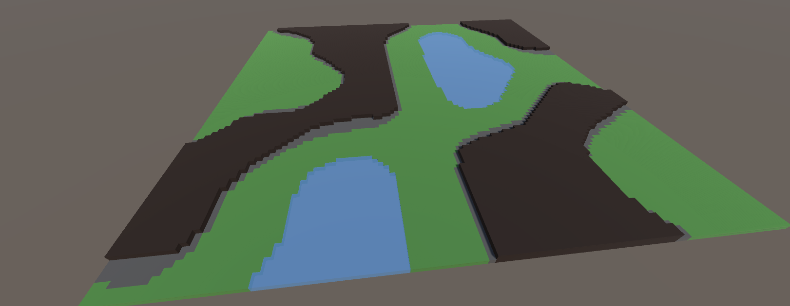

Procedural Generation
About:
This was my first ever unity project and my first game development project, and with it I had two main goals. First and foremost was to familiarize myself with the Unity interface and C#. Second, I used the project to learn about basic procedural generation techniques. My end goal with the project was to turn it into a colony management game similar to RimWorld, but in a fantasy setting and with z-layers. Unfortunately, I moved away from the project due to my courseload at the start of the 2022 fall semester. In the future I intend to either continue the project or start a similar one with the skills I have learned in the interim. A needlessly long writeup, as well as the project source code, can be found on my GitHub.
Technology and Tools Used:
This project was made in unity, as described above. Notably, this was my first exposure to procedural generation concepts such as noise generation and wave function collapse as well as more general programming concepts such as discrete convolution and subroutines.
Dungeon Brawler VR
Stacking Cups